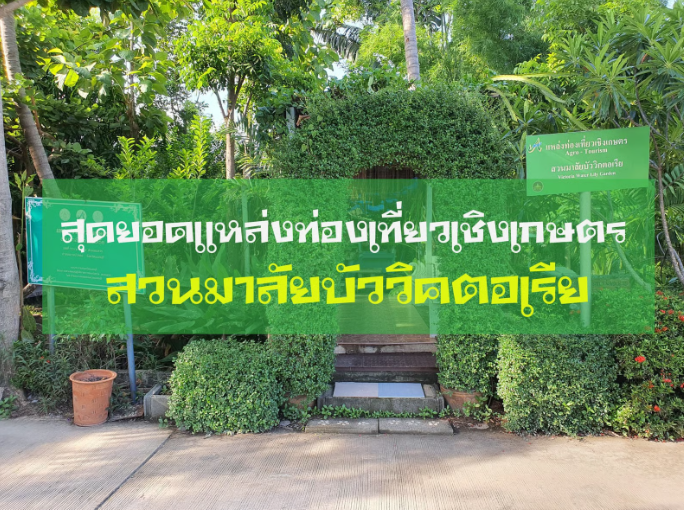
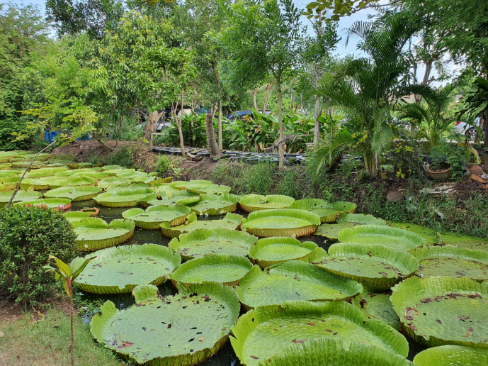
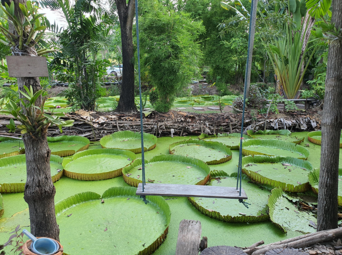
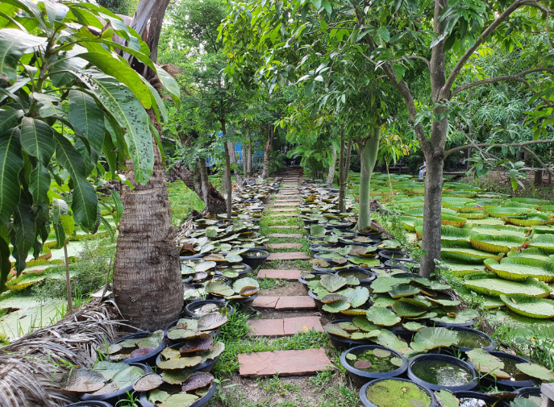
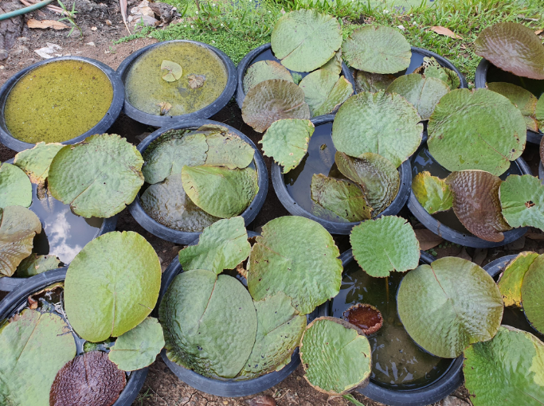
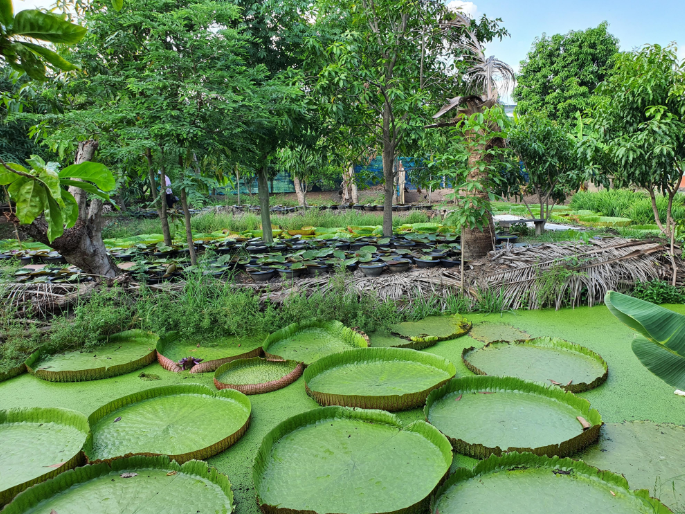

สวนมาลัยบัว วิคตอเรีย

หลาย ๆ คนคงจะชอบการท่องเที่ยวที่เป็นเกี่ยวกับธรรมชาติและสิ่งแวดล้อม แต่ต้องติดปัญหาที่ต้องเดินทางไกลหลายชั่วโมงกว่าจะถึงสถานที่ท่องเที่ยวนั้น ผมก็เลยอยากจะมานำเสนอแหล่งท่องเที่ยวธรรมชาติภายในปริมณฑลอย่าง อำเภอบางบัวทอง จังหวัดนนทบุรี ที่คนกรุงเทพสามารถเดินทางมาเยี่ยมชมได้ง่าย ๆ นั่นก็คือ สวนมาลัยบัววิคตอเรีย

สวนมาลัยบัววิคตอเรีย เป็นแหล่งท่องเที่ยวเชิงเกษตรที่มีเอกลักษณ์คือ การจัดสวนบัวที่ดูสวยงาม ซึ่งบรรยากาศจะเหมือนกับสวนหลังบ้านของคนทั่วไปแล้วเปิดให้นักท่องเที่ยวมารับชมกัน ดังนั้นอาจจะไม่ค่อยเหมาะสำหรับคนที่มาเป็นกลุ่มใหญ่มากนัก เพราะทางเดินรับชมมีขนาดค่อนข้างแคบ ตามสไตล์สวนหลังบ้านนั่นแหละครับ โดยรอบ ๆ ทางเดินก็จะมีบัวลอยน้ำมากมายอยู่ข้างทางทั้ง 2 ข้าง มีระเบียงและชิงช้าเหมาะสำหรับการถ่ายรูป ค่าเข้าชมจะอยู่ที่ราคา 20 บาทสำหรับผู้ใหญ่ และราคา 10 บาทสำหรับเด็ก

เหตุผลหลัก ๆ ที่คุณต้องลองมาเที่ยวที่นี่คือ การได้ยืนบนบัวลอยน้ำ คุณคิดว่ามันน่ามหัศจรรย์ไหมครับ บัวพวกนั้นสามารถรับน้ำหนักคนได้มากที่สุด 60 กิโลกรัม หรือบางใบสามารถรับน้ำหนักได้มากที่สุด 70 กิโลกรัมก็มีครับ ถ้าน้ำหนักเกิน จมแน่นอน!! โดยคนที่ลงไปยืนต้องจ่ายตังเพิ่มอีก 100 บาท แต่ถ้าเป็นเด็กจะจ่ายตังเพิ่ม 50 บาท


นอกจากจะเป็นแหล่งท่องเที่ยวเชิงเกษตรที่ใกล้กรุงเทพแล้ว ยังสามารถเป็นแหล่งทัศนศึกษาได้ด้วยสำหรับใครที่อยากจะมาหาความรู้เกี่ยวกับการจัดสวนและการปลูกใบบัว หรือถ้าใครสนใจอยากได้ใบบัวแบบนี้ไว้ที่บ้านก็สามารถซื้อเมล็ดพันธุ์กับเจ้าของสวนได้ มีทั้งสำหรับปลูกในกระถางเล็ก ขนาด 1 เมตรและใหญ่สุด 2 เมตร ราคาจะแตกต่างกันไป
